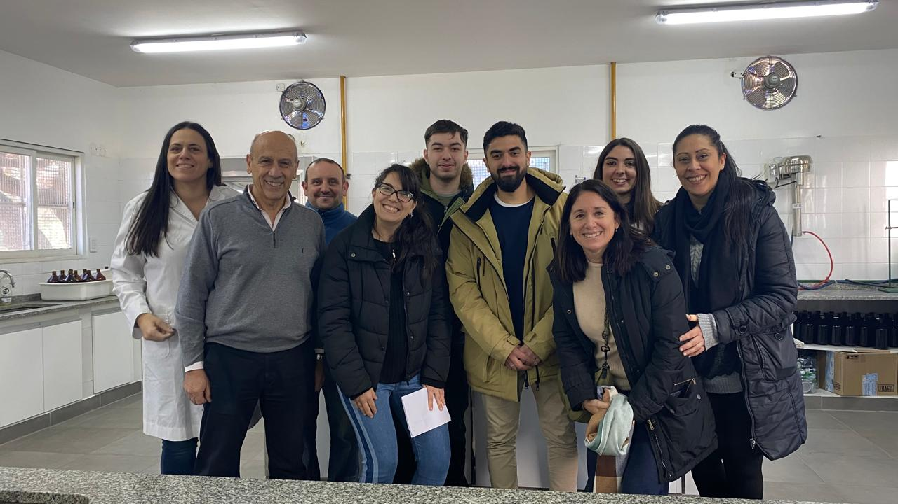
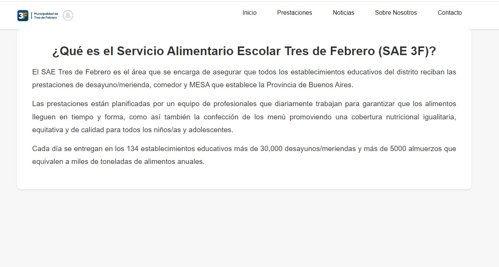
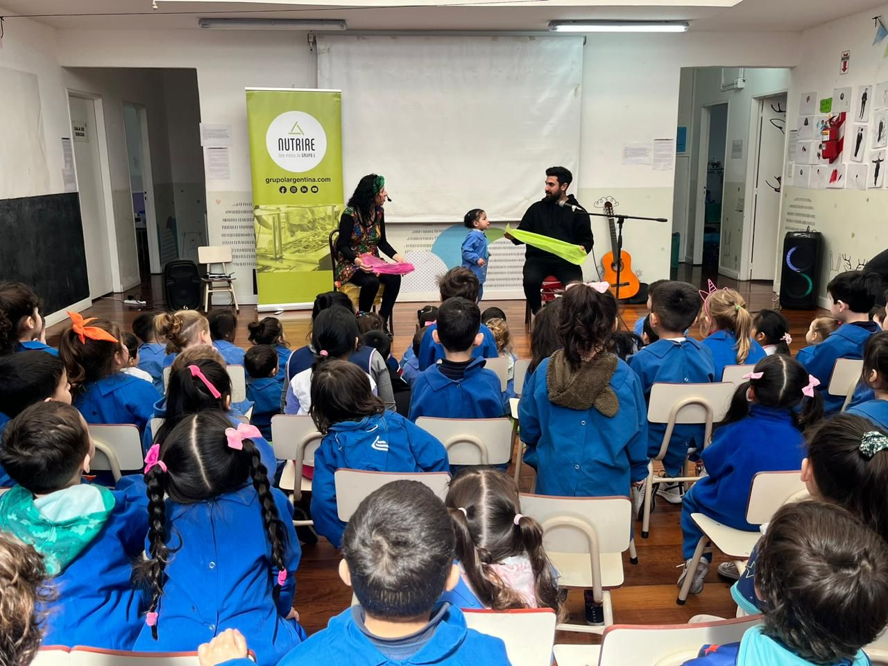

Visita al Laboratorio de Bromatología de Tres de Febrero
Fecha: 28 de julio de 2024
El equipo del Servicio Alimentario Escolar realizó una visita al laboratorio de bromatología de Tres de Febrero para conocer de cerca los procesos de control y análisis de los alimentos que se suministran en las escuelas. Esta visita refuerza nuestro compromiso con la seguridad alimentaria y la calidad de los productos que ofrecemos a los estudiantes.

Lanzamiento de la Nueva Página Web
Fecha: 22 de julio de 2024
Nos complace anunciar el lanzamiento de nuestra nueva página web del Servicio Alimentario Escolar. Esta plataforma está diseñada para ofrecer información completa sobre nuestros servicios, eventos y novedades.
A través de nuestra página web, los usuarios podrán acceder a noticias, conocer más sobre nuestros programas de alimentación, y contactarnos para cualquier consulta. Estamos comprometidos en ofrecer una experiencia digital mejorada para todos nuestros usuarios.

Talleres sobre el Consumo de Agua
Fecha: 15 de julio de 2024
El Servicio Alimentario Escolar está organizando una serie de talleres educativos para concienciar sobre la importancia del consumo responsable de agua. Estos talleres están dirigidos a estudiantes de diferentes niveles educativos y se llevarán a cabo en diversas instituciones a lo largo del mes de agosto.
Los participantes aprenderán sobre la importancia del agua en la alimentación y la salud, así como prácticas para reducir el consumo innecesario y conservar este recurso vital.